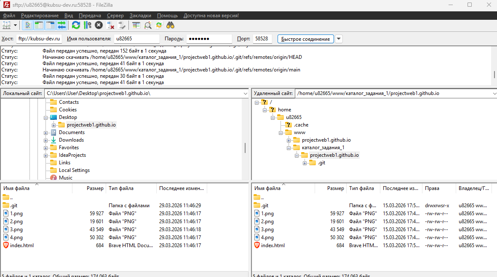

Ход работы
Подключение к учебному серверу kubsu-dev.ru с помощью ssh по порту 58528

ping kubsu.ru, чтобы узнать IP-адрес веб-сервера kubsu.ru, а также время,
за которое пакеты доходят с kubsu.ru до kubsu-dev.ru

nslookup kubsu.ru и kubsu-dev.ru, А-записи (IP-адрес) и MX-записи (почтовые серверы,
на которые идет отправка почты, а также их приоритет)

whois, чтобы узнать дату регистрации и много другой информации о
доменах kubsu.ru и kubsudev.ru (информация получается с помощью днс серверов)

Соединение с учебным сервером с помощью логина и пароля по протоколу SFTP
и копирование на локальный компьютер файлы задания из каталога www
